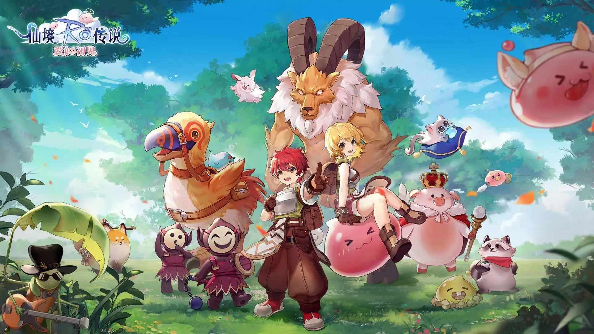
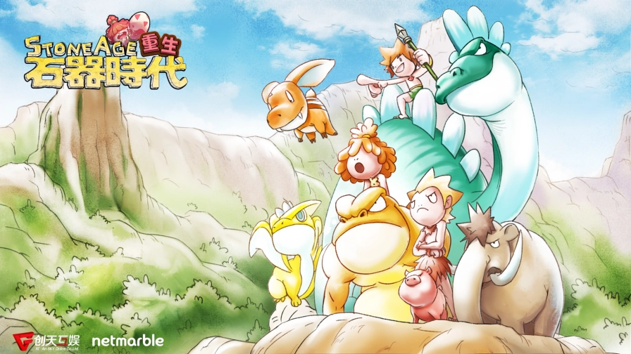

游戏开发 · 架构篇
0篇文章Unity游戏客户端框架
游戏开发 · 战斗篇
0篇文章游戏战斗系统
游戏开发 · 渲染篇
1篇文章Unity Shader
游戏开发 · 性能篇
0篇文章Unity游戏性能优化
小重山，念一遍又一遍
一名从业十年的游戏开发工程师，曾参与过知名游戏项目《仙境传说 · 爱如初见》、《石器时代 · 重生》、《猫灵相册》等项目的研发制作。


Unity游戏客户端框架
游戏战斗系统
Unity Shader
Unity游戏性能优化